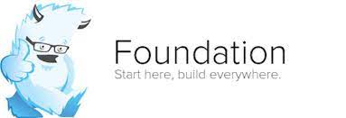

Rekomendasi CSS Framework Terbaik untuk Developer
Desain front-end menjadi bagian yang sangat penting di website atau aplikasi. Bukan cuma untuk meningkatkan impresi positif suatu brand saja. Tapi juga menjadi faktor penentu mau tidaknya pengguna untuk terus mengunjungi website atau memakai aplikasi. Nah, untuk bisa mengutak-atik tampilan front-end, setidaknya Anda perlu menguasai bahasa pemrograman yaitu CSS. Tetapi untungnya, kini Anda bisa menggunakan CSS framework yang memudahkan Anda untuk menciptakan desain front-end tanpa harus coding dari nol. Ya, ada banyak sekali pilihan framework CSS yang bisa Anda pakai. Masing-masingnya pun telah dibekali dengan fitur dan elemen yang berbeda. Supaya Anda bisa menemukan framework yang tepat, berikut kami jabarkan 10 daftar framework CSS yang paling populer di kalangan developer. Mari kita simak!
Apa itu CSS Framework?
CSS framework adalah kerangka kerja yang fungsinya untuk memudahkan Anda ketika mendesain website atau aplikasi, tepatnya di bagian layout dan tema. CSS framework berisi kumpulan kode CSS yang sudah siap pakai. Anda tak perlu repot untuk membuat struktur dasar desain dari nol. Sebab, CSS framework menyediakan berbagai macam elemen desain. Mulai dari sistem grid, pola user interface (UI) yang interaktif, aneka tipografi untuk website, tombol, ikon, dan lain-lain. Yang perlu Anda lakukan hanyalah mengcopy-paste setiap elemen yang tersedia dan menyesuaikannya ke desain website atau aplikasi yang Anda buat. Sisanya, Anda tinggal mengembangkan kerangka yang ada sampai menjadi desain akhir yang diinginkan. Dengan begitu, segala proses pembuatan front-end jadi bisa berjalan efektif dan lebih cepat.
Bootstrap
Rizka Ma'rifatul -
 Bootstrap pertama kali diciptakan oleh salah satu desainer dan developer Twitter di tahun 2011. Hingga saat ini, framework ini masih jadi yang paling populer daripada framework lainnya. Banyak developer yang menggunakan Bootstrap karena menawarkan banyak fungsi dan elemen desain yang responsif.
Bootstrap pertama kali diciptakan oleh salah satu desainer dan developer Twitter di tahun 2011. Hingga saat ini, framework ini masih jadi yang paling populer daripada framework lainnya. Banyak developer yang menggunakan Bootstrap karena menawarkan banyak fungsi dan elemen desain yang responsif.
Foundation
Rizka Ma'rifatul -

Foundation merupakan CSS framework pilihan kedua developer setelah Bootstrap. Hadir sejak 2011 dibawah lisensi MIT (Massachusetts Institute of Technology), Foundation merupakan framework dengan sistem open-source berbasis SASS.
Framework ini menawarkan berbagai elemen yang modern, fleksibel dan mudah untuk dikustomisasi. Untuk menghemat waktu pengerjaan, Foundation juga memfasilitasi Anda dengan berbagai template siap pakai melalui desain-desainnya.
Bulma
Rizka Ma'rifatul -
 Bisa dibilang, Bulma termasuk CSS framework pendatang baru, tetapi namanya sudah cukup banyak dikenal oleh kalangan developer. Daya tariknya ada pada penggunaannya yang mudah, responsif, bersifat open-source, dan bekerja secara optimal di segala perangkat.
Bisa dibilang, Bulma termasuk CSS framework pendatang baru, tetapi namanya sudah cukup banyak dikenal oleh kalangan developer. Daya tariknya ada pada penggunaannya yang mudah, responsif, bersifat open-source, dan bekerja secara optimal di segala perangkat.
Bulma hanya menggunakan komponen berbasis CSS (tanpa JavaScript). Namun tetap tidak menjadikan fiturnya kalah saing dengan framework lain. Buktinya saja saat ini Bulma sudah digunakan oleh 200+ ribu pengembang.
Bulma memfasilitasi Anda dengan CSS class yang mudah terbaca dan komponen yang siap pakai dengan interface yang mobile-friendly.Sistemnya juga sangat powerful.